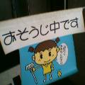

２００３年４月１５日～１７日
生まれて初めて九州上陸！
なんとか仕事も無事こなし、お世話になった営業所の方と夕食！
「しおいりさん、どこ行きます？」
「九州出張といえば福岡名物、屋台の『まみちゃん』と聞いてきたのですが・・・」
「じゃあ決まりね」
せっかく博多駅近くの駐車場に車を止めたのに、タクシーに乗って天神へ。
『まみちゃん』前に営業Ｙ氏の専用駐車場があるなんて知らなかったんです。
もっと早くから希望を伝えておけばよかったですね。すみませんです。
画像は『まみちゃん』のホームページで公開された我が姿。
訪問後、数日間の限定で公開されるとのことなので、コピペさせていただきました！
屋台『まみちゃん』のホームページ→http://members.jcom.home.ne.jp/0502/
『まみちゃん 屋台』をGoogleで検索！（さすが！ファンが多い！！）
福岡の屋台、サイコー！また行こうっと！（連れてってくださいねー！！）
『まみちゃん』では来店の記念に写真をホームページへ載せてくれます。
図々しくも、福岡のきれいどころが撮影中だったところへ乱入させていただきました。
別に店内で親交を深めたわけでもないのにね。どーも、おじゃましました。
※今になって、のれんにある「チャイニーズナポリ」というメニューが気になってしょーがない。
営業所Ｙ氏と共に。
Ｙ氏は『まみちゃん』の常連であり、また準店員でもあるらしい。
しかし、俺、太ったなぁ。
あとはケータイのカメラに収めてあった九州出張の思い出画像。
画像にポインタをのっけるとコメントが出ます。


【まみちゃんへ行ったおともだち】 【おわり】
|
|